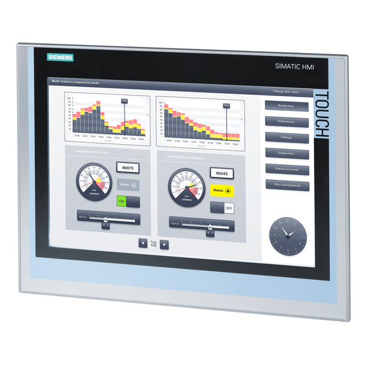
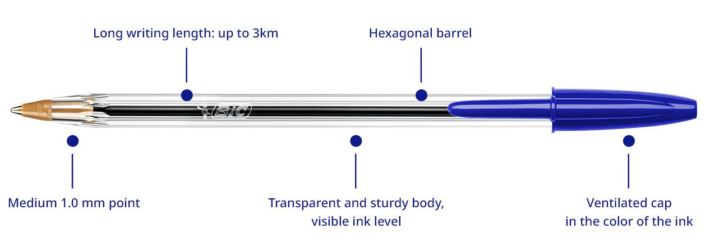

Modeling a real factory in Python: Back End logic, Front End visuals, and the HMI in between.

Almost every non-trivial program is split into two responsibilities. The Back End is the part the user never sees: it holds the data, runs the rules, and makes the decisions. In our case, the back end decides when a defective tip is rejected, when assembly fires, and when a pen is shipped. The Front End is the part the user sees and interacts with: text on a screen, buttons, charts, animations. Its only job is to present the back end's state and forward the user's intent back. A clean separation means the same back end can be reused with a web front end, a desktop GUI, or — as in industry — a panel mounted on a machine.
An HMI (Human-Machine Interface) is the specialized front end used in industrial automation. It is the touchscreen on a factory floor that lets an operator start the line, see how many pens have been shipped, watch live indicators turn green or red, and intervene if something fails. An HMI is not just decoration: it is the operator's window into the back end (often a PLC or SCADA system) and the operator's only safe channel to influence it. Three rules govern good HMI design: show only what the operator needs right now, make abnormal states visually unmistakable, and never let the screen lie about the state of the machine.
Mapping this to our project: ballpen_production_line.py is the Back End — pure logic, no pixels. ballpen_animation.py is the Front End, and because it visualizes a factory in real time with live counters and station status, it is essentially a small HMI. The two communicate through a shared data model (items, bins, counters), which is exactly how a real PLC publishes tags that an HMI subscribes to.
ballpen_production_line.py)
The back end models the factory as a set of cooperating objects. Dataclasses (Component, BallPen) describe what things are — plain data with a name, a serial number, and a quality. An Enum (Quality.OK, Quality.DEFECTIVE) replaces fragile string flags with values the interpreter can check. An Abstract Base Class (Station) defines the contract every workstation must honor: given an input, return an output or None. Concrete subclasses (ComponentMaker, QualityControl, AssemblyStation, FinalInspection, Packaging) each implement process in their own way.
The ProductionLine class is a composition, not an inheritance: it has stations, it does not act as one. Between QC and Assembly we keep collections.deque buffers — the software equivalent of a physical bin holding parts between machines. The orchestrator's run method is small because each part of the system has a single, well-defined responsibility — a textbook example of the Single Responsibility Principle.
Randomness simulates manufacturing variance: each maker has a defect rate (~5%) and assembly itself has a small failure rate (~2%). QC stations short-circuit defective items, returning None to signal "discard." This makes the line behave like a real one: the throughput is below the theoretical maximum, and the system must produce slightly more than the target to compensate for losses.
ballpen_production_line.py with random.seed(42) and confirm the report shows 5 shipped pens. Then change the seed to 1 and explain why the rejection counts differ even though the code is identical.spring, to support a retractable pen. You will need to update COMPONENT_NAMES, the BallPen dataclass, the is_complete check, and the assembly logic. Show that the report now lists makers and QC stations for the spring.defect_rate to 0.4. Predict what will happen to the number of components made per shipped pen, then run the script and compare your prediction with the actual ratio.pytest test that monkey-patches random.random to always return 0.0 (forcing every part to be defective) and asserts that the line never ships a pen — i.e., the run loop should be stopped via a maximum-attempts guard you add.Station hierarchy so that process always returns a list (possibly empty) instead of "an item or None." Explain in a comment why returning a list is more flexible if a station ever needs to emit more than one output.ballpen_animation.py)The animation is a Front End on top of the same simulation idea, written with matplotlib.animation.FuncAnimation. The fundamental pattern is the game loop: every tick we (1) clear the previous frame's transient drawings, (2) spawn new inputs, (3) advance state, (4) make decisions, and (5) render. This is the same rhythm used by every video game, every web UI library, and every industrial HMI on Earth.
Each in-flight item carries a stage field — "to_qc", "to_bin", "falling", "to_assembly" — and the renderer reads that field to decide where to draw it. This is a Finite State Machine. To synchronize the four components arriving at Assembly we use a counting semaphore (arrivals_at_assembly): when it reaches 4, we decrement by 4 and emit a finished pen. In a multithreaded version this would become an asyncio.Event or threading.Semaphore, but the logic is identical.
Crucially, the state (lists of items, bin counts, counters) is decoupled from the drawing (circles, labels, station boxes). The renderer is a pure function of the state. This is the same principle behind React, Vue, and modern HMI frameworks like Ignition or WinCC: the UI is a derivation of the data, not the source of truth. Swap matplotlib for an HTML canvas and the simulator does not change a line.
ballpen_animation.py and verify that ballpen_production_line.gif is produced. Open the GIF and identify, by visual inspection, at least one component being rejected (it should fall off the conveyor at QC).SPEED from 0.13 to 0.25 and decrease TOTAL_FRAMES to 150. Explain how throughput per frame changed and why the visual quality may suffer.rejected counter exceeds 5, change the title text to red and append " - HIGH REJECT RATE". This is your first taste of HMI alarm conditions."Bin" label with a colored bar whose height grows with the bin count. Cap it at 5 units tall, and turn the bar yellow when it reaches the top. This trains your eye to see state at a glance — the cardinal HMI design rule.SimulationState class that holds items, bins, and counters, with methods tick() and snapshot(). Have the animation only call snapshot(). Justify in a comment how this separation would let you swap the renderer for a Tkinter or web HMI without touching simulation code.